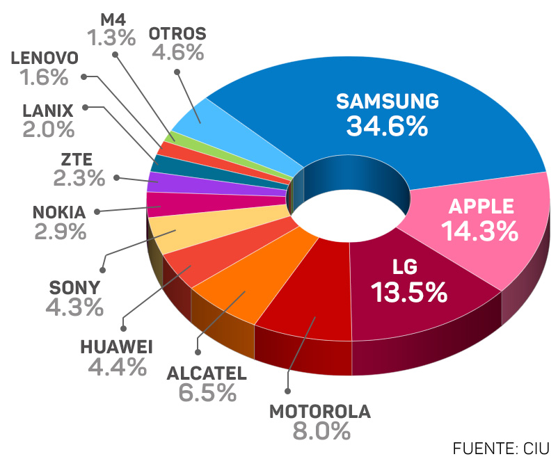
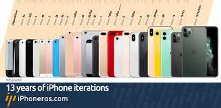

¡Que puede ser considerado un aparato tecnologico?
Los objetos o artefactos tecnologicos suelen ser objetos materiales dezplasables, enfocados al
cumplimiento de una funcion puntual, que por lo general busca ampliar los limites materiales del
cuermpo humano, es decir su fin es hacer algo que nosotros no podemos hacer o de una forma que
no podemos o no seria comodad de hacer, como las maquinas que producen y ordenan a gran
velocidad, lo podriamos hacer nosotros pero no con esa eficiencia o las maquinas que miden la
temperatura y presion del ambiente, para un humano seria imposible realizarlo o los controles,
que son artefactos como los controles, cuyo fin es hacernos la vida más comoda
Algunos de los dispositivos más usados.
top
10 aparatos electronicos
07/10/22
El top 10 de aparatos tecnologicos más usados
Termometros
Bocinas
Refrigeradores
Camaras
Computadoras
Relojes
Linternas
Armas de fuego
Los coches
El telefono
Estos son los los 10 aparatos tecnólogicos más usados, estos son vitales para nuestra vida diaria
Aqui te dejo algunos sitios donde puedes aprender más sobre tecnologia, ya seaviendo reviews
en
youtube o leyendo noticias y más en los otros sitios
Video
7/10/22
Video sobre la historia de la tecnologia
Investigación
11/11/22
El uso del telefono
¡Es malo el uso del telefono?
Los teléfonos inteligentes son una de las herramientas más utilizadas, diseñados como una
tecnología social que te permite comunicarte con otros en tiempo real, pero ¿cuál es el
uso excesivo en la vida cotidiana?
Un estudio realizado conjuntamente por investigadores de la Escuela Técnica Superior de
Ingenieros Industriales de la Universidad Politécnica de Madrid y del Departamento de
Psicología de la Universidad de Oviedo demuestra que el uso compulsivo del móvil no
mejora nuestras relaciones sociales, sino que incluso puede tener Un efecto. traer
algunos de ellos.
Usar el teléfono móvil de un modo compulsivo hará que tengas menos amigos y
más estrés Social Science Computer Review.
Cuanto tiempo se deberia usar el telefono
La recomendación para los jóvenes es que tengan el celular 2 horas. De acuerdo con el
sistema familiar, los adolescentes pueden revisar su teléfono antes o después de haber
cumplido con las tareas del hogar. Ya sea lavando los platos, sacar la basura, pasear a
la mascota, jugar con amigos o hacer cosas al aire libr etc.
Algunos especialistas expresan como tiempo óptimo para la salud un límite de
120
minutos diarios. ¡Sí, apenas dos horas por día! picaro news
2 horas
Tips
Aprovecha este canal de comunicación Asegúrate de que tu perfil en las RRSS sea privado
Para que sólo tus contactos agregados en cada una puedan ver tus publicaciones, fotos y
videos.Utiliza doble verificación de identidad
Desactiva todas las notificaciones, excepto las que te envían otras personas. Mantén solo tu
correo electrónico, mapas, calendario y cualquier otra cosa que uses diariamente al frente y
en el centro de la pantalla.
¡Es malo el uso del telefono?
Los telefonos pueden ser una de las herramientas más importantes que tenemos pero se
puede volver una de las más adictivas.
¿Qué buscan las personas en un telefono?
29/01/23
Los tres factores que más influyen en elegir un smartphone
Precio razonable, la mayoria de las personas, especialmente en México y paises subdesarrollados
indican que el precio es algo muy importante, por lo que buscan marcas como xiaomi, huawei o
telefonos gama baja de otras compañias( La gama baja de las compañias son los telefonso con
menor precio pero tambien con menor capacidad y funciones), y así pueden encontrar telefonos que
talvez no sean de la mejor calidad pero cumplen su función y les duraran por un buen tiempo.
Hardware, más del 60% de los mexicanos dice que esto es algo muy importante, ya que despues de
haber seleccionado el rango de precios que estan dispuestos a pagar ahora toca analizar otros
aspectos, como la camara, que tan claras se ven las fotos, la bateria, cuanto me va a durar y si
será suficiente para todo mi dia, la pantalla, quieren ver videos en buena calidad y para
algunos más especiales tambien el audio,
Comodidad/etsatus, muchas personas buscan marcas especificas como apple por que afirman qu e esos
telefonos son los mejores y son los más comodos, pero solo es así por que solamente han usado
esos y cuando usan otros de otras marcas no les dan la oportunidad y ni siquiera intentan usar
todas las funcioens, ya que ven los smarthphones que no son de apple como inferiores.

Esta Gráfica indica las marcas más comunes de smartphones en México .
La historia de los smartphones
31/01/23
Cuando se crearon estos dispositivos indispensables para nosotros hoy en dia?
Los primeros teléfonos inteligentes surgieron a finales de la década de 1990 y comienzos de
la de 2000, a partir de la integración de los teléfonos celulares tradicionales y los
dispositivos de agenda digital o computador de bolsillo, conocidos en ese entonces como PDA
(del inglés Personal Digital Assistant, “asistente personal digital”).
Estos primeros teléfonos “híbridos” ofrecían las funciones de ambos aparatos en uno solo: la
capacidad para hacer llamadas telefónicas y las pequeñas pantallas analógicas, que permitían
el registro de nombres y números, así como de pequeñas notas y mensajes.
Sin embargo, el primer smartphone propiamente dicho surgió en 1999, casi de la mano de la
tecnología de tercera generación (3G), surgida en 2001 y que permitía la transmisión de
información a grandes velocidades, lo que permitió el envío de paquetes de datos más grandes
(fotos, videos, etc.). Este primer teléfono propiamente inteligente fue el pdQ Smartphone,
de la empresa Qualcomm, y combinaba una PDA Palm con un teléfono celular CDMA con
conectividad a internet.
Otro gran salto cuántico en materia de telefonía inteligente fue dado en 2007 con el
lanzamiento del primer iPhone por parte de Apple, que cambió significativamente los
estándares y la estética de la telefonía para siempre. Su sistema operativo (iOS) fue
revolucionario y su único competidor real apareció en 2008: Android. Ambos fueron los
sistemas imperantes en la telefonía inteligente durante la década siguiente.
A partir de entonces, los smartphones no han hecho sino ganar funciones y crecer en
complejidad. La marcada tendencia hacia la miniaturización de los teléfonos celulares, por
ejemplo, se comenzó a revertir a partir de la adopción del touchscreen (pantalla táctil),
que requirió aparatos cada vez más voluminosos para que tuvieran pantallas funcionales y en
colores, junto a las grandes baterías necesarias para alimentar el sistema.

Asi han cambiado los celulares iphone de apple en los ultimos años.
 Aparatos
tecnologicos
Aparatos
tecnologicos

 Sitios de
apoyo
Sitios de
apoyo ¿Qué buscan las personas en un telefono?
¿Qué buscan las personas en un telefono?